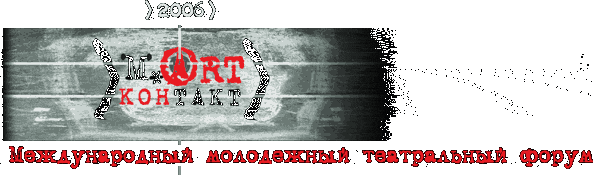

Конкурсная программа
Специальная программа
Состав жюри
Итоги форума
Пресса о форуме:
Газета «Вестник Могилева», спецвыпуск «Вестник театральный», 14 апреля 2006 года
Юрий РОМАНОВ
«Сотворение мира…»
Газета «Вестник Могилева», спецвыпуск «Вестник театральный», 14 апреля 2006 года
Ольга СЕРГЕЕВА
«Эхо форума»
Газета «Культура» (Россия), №14 (7524) 13 - 16 апреля 2006г.
Ирина АЛПАТОВА
«Контактная территория»
Газета «Могилевская правда», рубрика «Культпоход», 31 марта 2006 года
Лариса ЗИНЬКЕВИЧ
«Шекспир с кастрюльками»
«Настаунiцкая газета», 8 апреля 2006 года, рубрика «Авансцена».
Наталля КАПУСЦIНА.
“Дзень нараджэння фестывалю”.
Газета «Культура» (Беларусь), рубрыка «Кiно i тэатр», №13, 1-7 красавiка 2006 года.
Таццяна КОМАНАВА.
«Мастацтва кантактау».
Газета «Рэспублiка», рубрика «Глазами критика», 7 апреля 2006 года.
Татьяна ОРЛОВА
«Есть контакт»
Газета «День» (г. Киев), страница «Культура», рубрика «Ложа рецензента», 13 апреля 2006 года.
Алла ПОДЛУЖНАЯ.
«Могилевский мастер-класс»
Газета «Киевские ведомости», страница «Экран и сцена», рубрика «Театральный разъезд» среда, 26 апреля 2006 года.
Алла ПОДЛУЖНАЯ.
«Искусство познавать друг друга».
Газета «Могилевские ведомости», рубрика «Культура», 4 апреля 2006 года.
Владимир ЯКУБОВСКИЙ.
«В Могилев пришла весна, или Разговоры с Богом»
КОНКУРСНАЯ ПРОГРАММА
22.03 среда
Облдрамтеатр
18.30-20.30
ОТКРЫТИЕ ФОРУМА
Орловский государственный театр для детей и молодежи "Свободное пространство"
Э.Шмитт "ОСКАР РОЗОВАЯ ДАМА"
спектакль в письмах в 2-х действиях
23.03 чеверг
Облдрамтеатр
18.30-20.30
Новый Московский драматический театр
С.Шеппард "НАСТОЯЩИЙ ЗАПАД"
драма в 2-х действиях
24.03 пятница
Облдрамтеатр
18.30-20.20
Львовский театр "Воскресенье"
А.Кольтес "ЗАПАДНАЯ ПРИСТАНЬ"
драма в 1-м действии
25.03 суббота
Облдрамтеатр
12.00-12.50
Белорусский государственный театр кукол, проект "Новая сцена" (Минск)
"ДЕНЬ РОЖДЕНИЯ"
пластический спектакль в 1-м действии
Центр культуры и скусств
17.00-17.50
Белорусская государственная академия искусств (Минск)
Эмоционально-иллюстративный проект "КРЫША"
музыкально-пластический спектакль в 1-м действии
Облдрамтеатр
18.30-21.20
Могилевский областной драматический театр
В.Астафьев "Я ТВОЯ НЕВЕСТА"
баллада о влюбленных в 2-х действиях
26.03 воскресенье
Облдрамтеатр
малая сцена
17.00-18.00, 19.00-20.00
Театр "Стара Проховня" (варшава)
Э.Вальш "DISKO PIGS"
драма в 1-м действии
Облдрамтеатр
18.30-21.20
Современный художественный театр (Минск)
У.Шекспир "ДВЕНАДЦАТАЯ НОЧЬ"
комедия в 2-х действиях
27.03 понедельник
Центр культуры и скусств
17.00-18.10
Литовский государственный молодежный театр (Вильнюс)
Д.Привалов "ЛЮДИ ДРЕВНЕЙШИХ ПРОФЕССИЙ"
Del'arte-триллер для 3-х актеров
Облдрамтеатр
18.30-21.20
Театр-фестиваль "Балтийский дом" (Санкт-Петербург)
Е.Шварц "ДО СВИДАНИЯ, ЗОЛУШКА"
фантазии на тему сказки в 2-х действиях
СПЕЦИАЛЬНАЯ ПРОГРАММА
22.03 среда
Облдрамтеатр
17.00
Пресс-конференция с участием оргкомитета, жюри форума для представителей СМИ.
23.03 чеверг
Облдрамтеатр
холл 2-го этажа
10.00
Пресс-конференция для представителей СМИ и критики с участием Орловского государственного театра для детей и молодежи "Свободное пространство".
24.03 пятница
Облдрамтеатр
холл 2-го этажа
10.00
Пресс-конференция для представителей СМИ, критики с участием Нового Московского драматического театра.
Облдрамтеатр
малая сцена
11.00
Мастеская молодой режиссуры (показ отрывков).
Мастер-класс В.Долгачева (Москва).
25.03 суббота
Облдрамтеатр
холл 2-го этажа
10.00
Пресс-конференция для представителей СМИ, критики с участием Львовского театра "Воскресенье".
Облдрамтеатр
малая сцена
11.00
Мастеская молодой режиссуры (показ отрывков).
Мастер-класс В.Кима (Минск) "Пластическая режиссура".
26.03 воскресенье
Облдрамтеатр
холл 2-го этажа
10.00
Пресс-конференция для представителей СМИ и критики с участием Современного художественного театра (Минск).
Облдрамтеатр
малая сцена
11.00
Мастеская молодой режиссуры (показ отрывков).
27.03 понедельник
Облдрамтеатр
холл 2-го этажа
10.00
Пресс-конференция для представителей СМИ и критики с участием театров "Стара Проховня", Могилевского областного драматического театра, Театра-фестиваля "Балтийский дом", Литовского государственного молодежного театра.
Облдрамтеатр
малая сцена
11.00-14.00
Мастеская молодой режиссуры (показ отрывков).
Мастер-класс А.Праудина (Санкт-Петербург). Обсуждение работ молодых режиссеров.
СОСТАВ ЖЮРИ
Председатель жюри:
ТКАЧЕНКО Александр Леонидович - народный артист Беларуси, лауреат Государственной премии Республики Беларусь (Минск, Беларусь).
Члены жюри:
АЛПАТОВА Ирина Леонидовна - театральный критик, кандидат искусствоведения, обозреватель газеты "Культура" (Москва, Россия).
ГРИБАЙЛО Вячеслав Александрович - театральный критик, ответственный секретарь президиума Совета ОО "Белорусский союз литературно-художественных критиков", научный сотрудник Института искусствоведения, этнографии и фольклора НАН Беларуси (Минск, Беларусь).
ДМИТРИЕВСКАЯ Марина Юрьевна - театральный критик, кандидат искусствоведения, доцент СПГАТИ, главный редактор "Петербургского театрального журнала" (Санкт-Перербург, Россия).
ОРЛОВА Татьяна Дмитриевна - театральный критик, профессор Белорусского государственного университета, доктор филологических наук (Минск, Беларусь).
ПОДЛУЖНАЯ Алла Антоновна - театральный критик, редактор журнала "Театрально-концертный Киев" (Киев, Украина).
ИТОГИ ФОРУМА
Двадцать седьмого марта, во всемирный День театра, завершился и подвел итоги I Международный молодежный театральный форум «М.art. контакт» в Могилеве. На протяжении шести дней на нем представляли свои спектакли десять профессиональных театров из пяти стран:
1. Орловский Государственный театр для детей и молодежи «Свободное пространство» со спектаклем «Оскар и Розовая дама» (Эрик Шмитт, режиссер Александр Михайлов, г. Орел, Россия).
2. Новый Московский драматический театр со спектаклем «Настоящий запад» (Сэм Шэпард, режиссер Нарказ Искандарова, г. Москва, Россия).
3. Львовский театр «Воскресенье» со спектаклем «Западная пристань» (Бернар-Мари Кольтес, режиссер Ярослав Федоришин, г. Львов, Украина).
4. Проект «Новая сцена» Белорусского Государственного театра кукол со спектаклем «День рождения» (автор и режиссер Евгений Корняг, г. Минск, Беларусь).
5. Белорусская Государственная Академия искусств с эмоционально-иллюстративным проектом «Крыша» (Автор и хореограф Ольга Скворцова, г. Минск, Беларусь).
6. Могилевский областной драматический театр со спектаклем «Я твоя невеста» (В. Астафьев, режиссер Валентина Еренькова, г. Могилев, Беларусь).
7. Театр «Стара Проховня» со спектаклем «Disco pigs» (Энда Вальш, режиссер Влодзимеж Качковски, г. Варшава, Польша).
8. Современный художественный театр со спектаклем «Двенадцатая ночь» (В. Шекспир, режиссер Екатерина Огородникова, г. Минск, Беларусь).
9. Литовский государственный молодежный театр со спектаклем «Люди древнейших профессий» (Данила Привалов, режиссер Балис Латенас, г. Вильнюс, Литва).
10. Театр-фестиваль «Балтийский дом» со спектаклем «До свидания, Золушка» (Е. Шварц, режиссер Анатолий Праудин, г. Санкт-Петербург, Россия).
Итоги конкурсной программы форума:
• Приз зрительских симпатий – спектакль «Disco pigs», театр «Стара Проховня» (г. Варшава, Польша).
• Специальный приз жюри «За яркую сценическую фантазию» – спектакль «Двенадцатая ночь», Современный художественный театр (г. Минск, Беларусь).
• Приз «За лучшее воплощение молодежной темы» – эмоционально-иллюстративный проект «Крыша» Белорусской Государственной академии
• Приз «За лучшую мужскую роль» – Михаил Калиничев за роль Ли в спектакле «Настоящий Запад», Новый драматический театр (г. Москва, Россия).
• Приз «За лучшую женскую роль» – заслуженная артистка Татарстана Елена Крайняя за роль Оскара в спектакле «Оскар и Розовая дама», Орловский Государственный театр (г. Орел, Россия).
• Приз «За лучшую режиссуру» - режиссер Анатолий Праудин за спектакль «До свидания, Золушка!», Театр-фестиваль «Балтийский дом», Санкт-Петербург, Экспериментальная сцена Анатолия Праудина.
• Гран-при – спектакль «Я твоя невеста», Могилевский областной драматический театр.